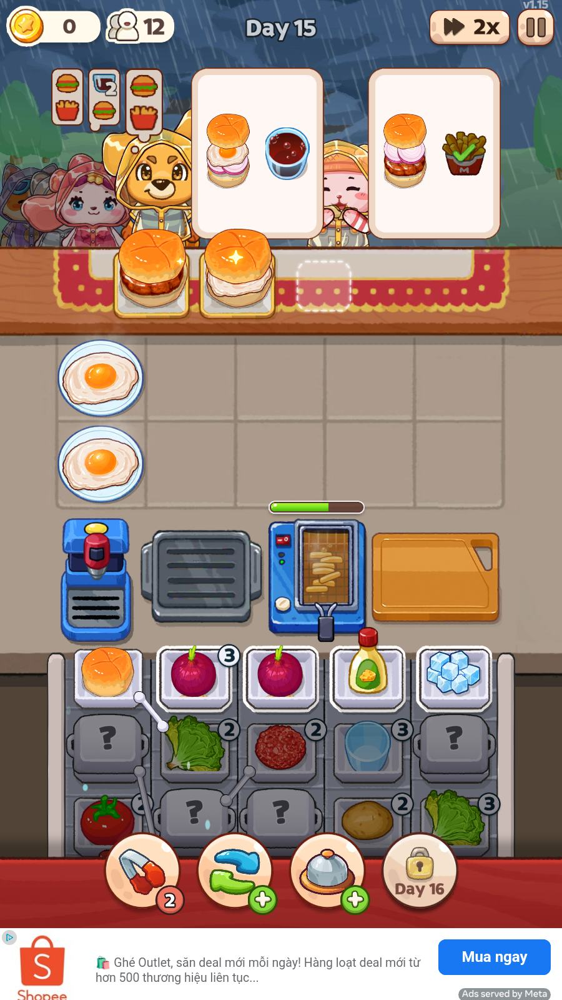
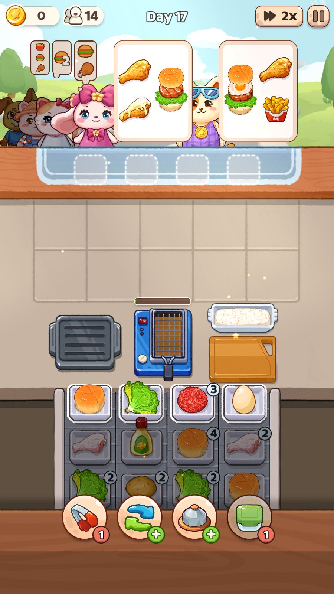
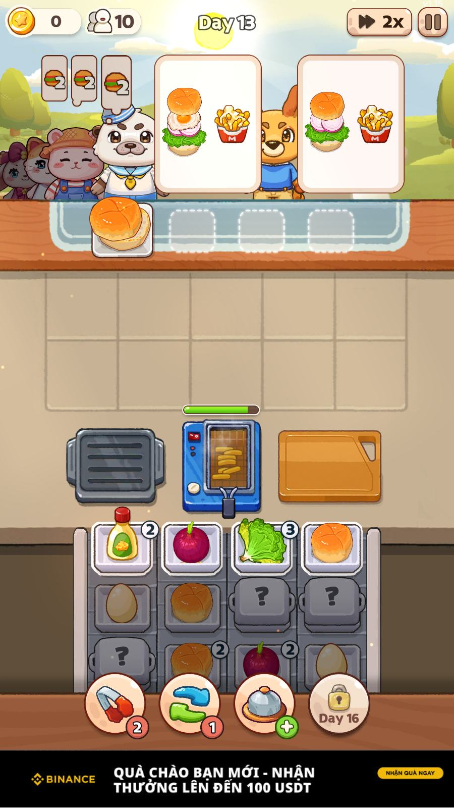
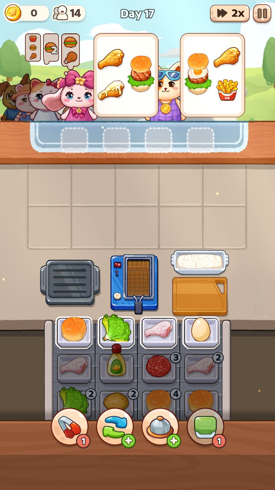
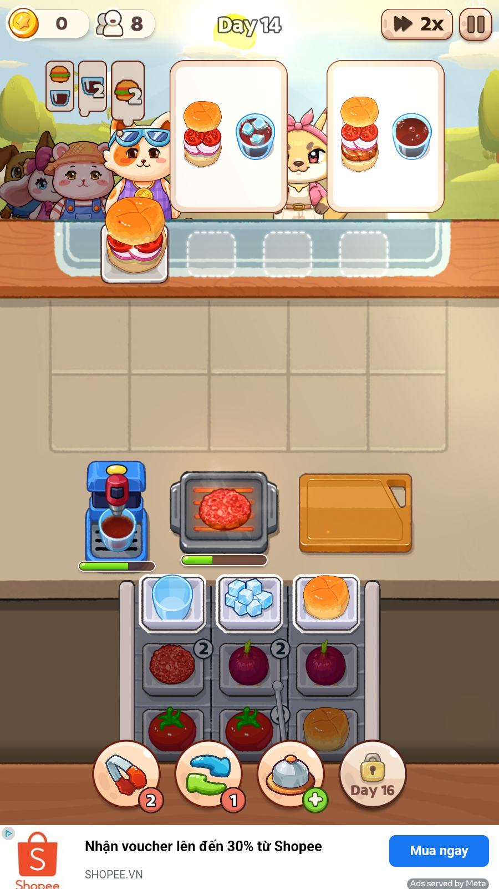

Dụng cụ nấu theo map
Mô tả
- Mỗi map có 4 đến 7 dụng cụ (thớt, vỉ nướng, nồi chiên, máy soda, lò, nồi hấp...). Nguyên liệu chạm xong bay thẳng tới dụng cụ nhận nó và tự nấu, người chơi không phải bấm gì thêm.
- Thời gian nấu =
cookTimes[món]chiacookSpeedcủa map, rồi chia thêm theo cấp nâng cấp dụng cụ (mua bằng coin ở BuildingUpgrade). Ví dụ burger: patty 5,433 giây chia 1,5 = 3,62 giây ở cấp 1. - Có 6 lớp dụng cụ đặc biệt: kết quả dạng linh hoạt (nồi chiên burger), pha nhiều lựa chọn và máy xay (coffee), ưu tiên món dùng chung (icecream, dimsum), kéo theo nhu cầu (sandwich, tteokbokki), nấu tay (sốt pasta) và lò pizza.
- Dụng cụ giữ kết quả khi lưới không còn ô; việc chờ ô không dừng bộ đếm Out of Slots, nên ca "tưởng kẹt" Day 15 là do băng còn nước đi chứ không do dụng cụ (IngredientGrid UC-10).
- Số dụng cụ mỗi map khớp giữa
recipe_config(Data) và số thành phần trong scene FS (APK).
Thiết kế chi tiết
Tóm tắt thiết kế
- Code Dụng cụ tự nấu khi nhận đúng nguyên liệu; người chơi không điều khiển (ngoại lệ: chạm sốt pasta).
- APK Số dụng cụ trong scene FS khớp số
stationstrong recipe_config ở cả 11 map (4 đến 7). - Code Thời gian nấu =
cookTimes÷cookSpeed÷ cấp nâng cấp. Burger cấp 1: patty 3,62 s; bun 2,22 s; khoai cắt 6,0 s. - Playtest Dụng cụ mới xuất hiện dần: máy Fizz-Fast thấy từ Day 14, khay bột từ Day 17; nồi chiên có thanh tiến độ ở phía trên, thớt và vỉ ở phía dưới.
- Code Dụng cụ giữ kết quả khi lưới đầy (
IsWaitingForCell); dụng cụ chờ ô không dừng bộ đếm Out of Slots (CookingStation.IsMidCook= đang làm và không chờ ô, @0x40699a4), nên không phải nguyên nhân ca Day 15. - Nhận định Nâng cấp dụng cụ là sink coin chính ở Home (giá 450 đến 1.250 mỗi cấp), nhưng chỉ làm nhanh mẻ nấu; áp lực thật vẫn là chỗ chứa.
Luồng người chơi từng bước
- Chạm nguyên liệuNgười chơi PlaytestBun bay lên thớt, thanh xanh chạy.

Chạm bun: bun lên thớt, thanh tiến độ xanh chạy; chai mayo lộ ra ở cột 1 - Nấu tự độngHệ thống PlaytestNồi chiên thanh ở trên; vỉ và thớt thanh ở dưới.

Nồi chiên: thanh tiến độ phía trên, khác vỉ và thớt (phía dưới) - Chuỗi hai bướcHệ thống PlaytestGà lên khay bột rồi sang nồi chiên.

Gà sống lên khay bột rồi sang nồi chiên - Xả kết quảHệ thống Code
HandleCompletexả ra ô lưới hoặc quầy; không có ô thì giữ. - Chờ ô khi lưới đầyHệ thống PlaytestDay 15: hai dụng cụ đã nấu xong và giữ kết quả khi lưới đã đầy; việc chờ ô không dừng bộ đếm Out of Slots.Xem IngredientGrid UC-10.

Day 15 lần 3: nồi chiên và thớt đã đầy thanh, giữ kết quả chờ ô khi lưới 10/10


Dụng cụ và lớp xử lý theo map
| Map | Số dụng cụ | cookSpeed | Lớp đặc biệt trong scene (Code) | Dụng cụ (recipe_config) |
|---|---|---|---|---|
| burger | 5 | 1,5 | FlexibleResult ×1 | griddle, coca machine, cutting board, fryer, bowl coating |
| coffee | 5 | 1,2 | FlexibleResult, CombineMultiChoice, CafeBlender | cutting board, pan, oven, blender, maker |
| sushi | 6 | 1,2 | - | cutting board (rau, cá), grater, pot, rice cooker, teapot |
| pasta | 5 | 1,0 | PastaSauceStation ×1 | boiler pot, chopping board, sauce blender, pan, soda machine |
| icecream | 5 | 1,2 | SharedFirst ×2 | cutting board, cone maker, blender, ice shaver, milkshake mixer |
| sandwich | 5 | 1,0 | SharedFirstOnDemand ×1 | cutting board, pot, toaster, juice extractor, frying pan |
| tteokbokki | 5 | 1,0 | SharedFirstOnDemand ×1 | cutting board, stew pot, noodle boiler, griddle, fryer |
| seafood | 4 | 1,0 | - | stockpot, charcoal grill, saute pan, broiler oven |
| dimsum | 5 | 1,0 | SharedFirst, GraphRouted, DimsumCookStation ×2 | cutting board, grinder, bamboo steamer, frying station, teapot |
| pizza | 7 | 1,0 | PizzaOvenStation ×1 | pizza oven, cutting board, raw prep board, fryer, dough roller, coca machine, flour |
| bento | 6 | 1,0 | - | rice mold, cutting board, boiling pot, frying pan, deep fryer, grill |
Số dụng cụ đếm từ các thành phần CookingStation và biến thể trong từng scene FS (APK) và danh sách stations của recipe_config (Data). Croissant và tacos chưa có scene.
Thời gian nấu burger (cấp 1)
| Món | cookTimes (s) | Sau ÷ 1,5 (s) |
|---|---|---|
| beef_patty | 5,433 | 3,62 |
| egg_fried | 6,0 | 4,0 |
| cup_coca | 3,0 | 2,0 |
| burger_bun, cheese_cut, lettuce | 3,333 | 2,22 |
| red_onion_cut | 4,667 | 3,11 |
| tomato_cut | 3,233 | 2,16 |
| potato_cut | 9,0 | 6,0 |
| chives_cut | 5,333 | 3,56 |
| chicken_kfc, potato_fried | 4,667 | 3,11 |
| coating (4 loại gà) | 2,333 | 1,56 |
Nguồn: Data/maps/burger/recipe_config.json, chia cho cookSpeed 1,5. Chưa đo lại bằng video ở 1.15; bản 1.11 đo patty 3,50 đến 3,53 s và soda 1,90 s.
Giá nâng cấp dụng cụ burger (coin)
| Dụng cụ | Cấp 2 | Cấp 3 | Cấp 4 | Cấp 5 |
|---|---|---|---|---|
| board (thớt) | 450 | 1.050 | 1.150 | 1.250 |
| griddle (vỉ) | 550 | 1.000 | 1.100 | 1.200 |
| coca (soda) | 600 | 1.000 | 1.150 | 1.250 |
| fryer (nồi chiên) | 700 | 1.050 | 1.150 | 1.250 |
| flour (khay bột) | 750 | 1.050 | 1.150 | 1.250 |
Nguồn: UpgradeConfig-burger. Xem BuildingUpgrade.
Vận dụng cho game khác
- Dụng cụ tự động hoàn toàn đưa trọng tâm quyết định về "chạm gì trước", không về thao tác.
- Dụng cụ phải có đường thoát khi không có chỗ xả kết quả, nếu không sẽ tạo khoá vòng với kho chứa.
- Mỗi map đổi dụng cụ và công thức nhưng giữ nguyên khung (lưới, quầy, khách) giúp tái sử dụng toàn bộ hệ thống chơi.
Bảng tổng hợp mọi tính năng đã làm chi tiết: FoodiePop_ThietKeChiTiet.xlsx.
Mở khóa & điểm vào
Dụng cụ đầu tiên có ngay Day 1. Dụng cụ mới của burger mở theo level: máy Fizz-Fast (soda) từ Day 2 theo dữ liệu (dishFirstLevel soda 2) và thấy ở Day 14; khay bột (gà rán) từ Day 7 (fried-basket), thấy ở Day 17.
Điểm vào:
- Hàng dụng cụ giữa lưới 5×2 và băng nguyên liệu
- Màn Upgrade Building ở Home: mua cấp cao hơn cho từng dụng cụ (griddle, coca, fryer, flour, board)
- Thẻ chi tiết dụng cụ
UIItemToolDetailsvàUIItemToolUpgradetrong Home
Cách hoạt động
- Khi nạp level,
LevelSupply.Buildquyết định dụng cụ và nguyên liệu nào cần; nhóm dụng cụ không có đầu ra trong level bị khoá. LevelPlayLoadAndSetupControl.BuildToolUpgradesđọc cấp nâng cấp đã lưu của từng dụng cụ (ToolData.GetStat).- Nguyên liệu tới:
CookingStation.PutInIngredientnhận,CountFreeSlotscho biết còn chỗ. StationOrchestrator.TryStartProcesschạy; thời gian từCookingStation.GetCookDuration(LevelInfo.GetStationCookDurationrồiGetUpgradedCookDuration).- Xong thì
StationOrchestrator.HandleCompletexả kết quả ra ô lưới hoặc lên quầy; không còn ô thì giữ (IsWaitingForCell) và thử lại (TryResolveWaiting). - Món chờ ở lưới được nạp lại dụng cụ khi rảnh (
StationGridFeeder.Tick,MessyController.AutoFeedStationFromGrid). - Dụng cụ đặc biệt thêm quy tắc riêng (UC-06 đến UC-10).
Ảnh chụp
Bấm ảnh để phóng to, dùng phím ← → để chuyển ảnh. Nhãn màu cho biết nguồn bằng chứng của ảnh.







Phần thưởng
| Ngữ cảnh | Phần thưởng | Evidence |
|---|---|---|
| Mua cấp cao nhất toàn bộ mục của burger | 100 gem + 1 Magnet (_rewardFullUpgrade); mở hết mục: 1 Swap Row + 1 Auto Cook (_rewardAllItems) | MapUpgradeConfig |
Số liệu chính
| Chỉ số | Giá trị | Nguồn |
|---|---|---|
| Số dụng cụ theo map | burger 5, coffee 5, sushi 6, pasta 5, icecream 5, sandwich 5, tteokbokki 5, seafood 4, dimsum 5, pizza 7, bento 6 | FS<Map>.unity và recipe_config |
| cookSpeed | burger 1,5; coffee / sushi / icecream 1,2; còn lại 1,0 | RecipeConfigSO |
| Cấp dụng cụ tối đa | 5 | MapToolConfig.ToolData.FullyUpgradedLevel |
| Thời gian nấu burger cấp 1 | patty 3,62 s; egg 4,0; bun 2,22; potato_cut 6,0; coating 1,56 | cookTimes / 1,5 |
| Giá nâng cấp burger cấp 2 | board 450; griddle 550; coca 600; fryer 700; flour 750 | UpgradeConfig-burger |
| Món bật gridPreMerge | dimsum 6, pizza 3 | recipe_config dishInfos |
Use case (11)
Bấm vào từng use case để mở. Mở/đóng tất cả
UC-01 Nguyên liệu tới dụng cụ và tự nấu
Các bướcCookingStation.PutInIngredientStationOrchestrator.TryStartProcessbắt đầu- Thanh tiến độ chạy (thớt, vỉ: dưới dụng cụ; nồi chiên: phía trên)
| Actor | System |
|---|---|
| Trigger | Bản sao nguyên liệu tới dụng cụ |
| Điều kiện | Dụng cụ nhận id đó (AcceptsId) và còn slot |
| Kết quả | Playtest Day 13: bun lên thớt, thanh xanh chạy, cắt xong bay sang ô quầy |
| Quy tắc / số liệu | Nhận theo groups khai trong scene; LevelSupply khoá nhóm không cần |
| Evidence | CookingStation.PutInIngredient |
UC-02 Tính thời gian nấu
Các bướcLevelInfo.GetStationCookDuration(station, result)lấycookTimes/cookSpeedLevelInfo.GetUpgradedCookDurationđổi theo cấp dụng cụ (nghịch đảo tốc độ)
| Actor | System |
|---|---|
| Trigger | Bắt đầu một mẻ |
| Điều kiện | Có cookTimes cho món |
| Kết quả | Burger cấp 1: patty 3,62 s, trứng 4,0 s, bun 2,22 s, khoai cắt 6,0 s |
| Quy tắc / số liệu | cookSpeed theo map: burger 1,5; coffee, sushi, icecream 1,2; các map còn lại 1,0. Mẻ mặc định 2,0 s nếu thiếu cookTimes (defaultDuration) |
| Evidence | LevelInfo.GetStationCookDuration |
UC-03 Nâng cấp dụng cụ
Các bước- Mua mục
<tool>-lv2... trongUpgradeConfig BuildToolUpgradesnạp cấp vào mànGetToolUpgradetrảToolUpgradeStat(hệ số và độ lệch)
| Actor | Player |
|---|---|
| Trigger | Mua cấp mới trong Upgrade Building |
| Điều kiện | Đủ coin; cấp tối đa 5 (ToolData.FullyUpgradedLevel) |
| Kết quả | Playtest: người chơi mua Pole Sign 300, Fizz-Fast Machine 600, Crispy Fryer 700, Bigger House 1.000 coin |
| Quy tắc / số liệu | Giá burger: coca 600 / 1.000 / 1.150 / 1.250; griddle 550 / 1.000 / 1.100 / 1.200; fryer 700 / 1.050 / 1.150 / 1.250; flour 750 / 1.050 / 1.150 / 1.250; board 450 / 1.050 / 1.150 / 1.250. Mảng tốc độ mặc định [1, 1,2, 1,4, 1,6, 1,8] lấy từ 1.11 |
| Evidence | LevelInfo.GetToolUpgrade |
UC-04 Dụng cụ chờ ô khi lưới đầy
Các bướcStationOrchestrator.SetWaitingForCellTryResolveWaitingthử lại khi có ô giải phóng (CookingStation.OnGridCellFreed)GridIngController.AnyStationResolvingJamchỉ tính dụng cụ có món đang bay tới hoặc đang nấu mà kết quả có chỗ; dụng cụ chờ ô không được tính
| Actor | System |
|---|---|
| Trigger | Nấu xong mà không còn ô trống |
| Điều kiện | Lưới 10/10 và quầy không nhận |
| Kết quả | Dụng cụ giữ kết quả; nếu băng hết nước đi thì bộ đếm Out of Slots vẫn chạy bình thường (xem UC-11) |
| Quy tắc / số liệu | Bộ đếm Out of Slots chỉ tạm dừng khi dụng cụ đang nấu (CookingStation.IsMidCook = đang làm và không chờ ô, @0x40699a4) hoặc đang gỡ kẹt (CookingStation.IsResolvingJam trả false khi chờ ô, @0x406bc24); dụng cụ đã xong và chờ ô không dừng bộ đếm |
| Evidence | StationOrchestrator.TryResolveWaiting |
UC-05 Nạp lại dụng cụ từ lưới
Các bướcStationGridFeeder.Ticktìm món nạp được (FindFeedableItem)MessyController.AutoFeedStationFromGridném món từ lưới sang dụng cụ
| Actor | System |
|---|---|
| Trigger | Dụng cụ rảnh mà lưới có món nó nhận |
| Điều kiện | LevelInfo.WantsAutoFeed |
| Kết quả | Món chờ ở lưới tự lên dụng cụ, người chơi không cần thao tác |
| Quy tắc / số liệu | Đọc từ cấu trúc 1.15, khớp 1.11 (thử lại 0,4 s) |
| Evidence | StationGridFeeder.Tick |
UC-06 Nồi chiên kết quả linh hoạt (burger, coffee)
Các bướcSpawnResulttạo đúng một mónFlexibleDragItembất kể số kết quảShelfGainOfResulttính điểm quầy theo tập món
| Actor | System |
|---|---|
| Trigger | Nấu xong ở CookingStationFlexibleResult |
| Điều kiện | Scene Burger (1) và Cafe (1) |
| Kết quả | Gà rán, khoai chiên ra hộp |
| Quy tắc / số liệu | Mô tả đầy đủ từ 1.11, chỉ kiểm lại tên hàm ở 1.15 |
| Evidence | CookingStationFlexibleResult.SpawnResult |
UC-07 Máy pha nhiều lựa chọn và máy xay (coffee, pasta)
Các bướcResolveBaseIngxác định base có trong mọi nhómInjectBaseđưa base vào nhóm có input khác- Máy xay: kết quả vào khay (
OnTrayArrived), nhả từng món (ReleaseTrayContent)
| Actor | System |
|---|---|
| Trigger | Nguyên liệu chung (base) tới máy |
| Điều kiện | CookingStationCombineMultiChoice hoặc CookingStationCafeBlender |
| Kết quả | Cà phê và bánh ngọt ra khay thay vì rơi xuống lưới |
| Quy tắc / số liệu | Chỉ có ở FSCafe (1 CombineMultiChoice, 1 CafeBlender) |
| Evidence | CookingStationCombineMultiChoice.InjectBase |
UC-08 Dụng cụ chia sẻ món chung (icecream, dimsum, sandwich, tteokbokki)
Các bướcBuildSharedxác định id chungRegroupchuyển món đang giữ sang nhóm khác khi id mới không vào được- Bản OnDemand chỉ tự kéo khi các input còn lại đang nằm trên lưới (
RestOnGrid)
| Actor | System |
|---|---|
| Trigger | Món có mặt trong nhiều nhóm tới dụng cụ |
| Điều kiện | CookingStationSharedFirst (icecream 2, dimsum 1) hoặc CookingStationSharedFirstOnDemand (sandwich 1, tteokbokki 1) |
| Kết quả | Tránh giữ món thừa chặn dụng cụ |
| Quy tắc / số liệu | Dimsum còn có CookingStationGraphRouted (xếp nhóm theo đồ thị công thức) |
| Evidence | CookingStationSharedFirst.Regroup |
UC-09 Nấu tay ở sốt pasta
Các bướcPastaSauceStation.OnPointerClickrồiTryStartManualProcess- Nấu nhóm thủ công đầu tiên đủ input
| Actor | Player |
|---|---|
| Trigger | Chạm dụng cụ sốt pasta |
| Điều kiện | Nhóm có cạnh đồ thị auto = false |
| Kết quả | Một ngoại lệ hiếm của game: người chơi chạm dụng cụ để bắt đầu nấu |
| Quy tắc / số liệu | Chỉ pasta (1 trạm). Chưa chơi tới pasta ở 1.15 |
| Evidence | PastaSauceStation.TryStartManualProcess |
UC-10 Lò pizza và dụng cụ dimsum giữ nguyên liệu lắp ráp
Các bướcOnItemPutIngiữ nguyên liệu lắp rápCollectPizzaAssemblies/CollectHeldAssembliescho quầy biết món đang dựng- Kết quả ra qua
SpawnResult
| Actor | System |
|---|---|
| Trigger | Nguyên liệu pizza hoặc dimsum tới lò, nồi hấp |
| Điều kiện | PizzaOvenStation (pizza) hoặc DimsumCookStation (dimsum 2 trạm) |
| Kết quả | Món lắp ráp (pizza, bánh dimsum) hình thành trên dụng cụ và lưới (gridPreMerge) |
| Quy tắc / số liệu | gridPreMerge bật cho 6 món dimsum và 3 món pizza trong recipe_config |
| Evidence | PizzaOvenStation.CollectPizzaAssemblies |
UC-11 Dụng cụ chờ ô khi lưới đầy (Day 15)
Các bước- Nồi chiên giữ khoai chiên, thớt giữ bun; cả hai
_waitingForCell= true nên không tính là đang nấu (IsMidCook@0x40699a4) hay gỡ kẹt (IsResolvingJam@0x406bc24) TickFullAlertvẫn có thể đếm Out of Slots; nó chỉ không đếm vì băng còn nước đi (patty x1 cột 4, 5 vào vỉ trống)- Người chơi không chạm patty x1 nên tưởng kẹt
| Actor | System |
|---|---|
| Trigger | Lưới đầy và hai dụng cụ đã nấu xong, giữ kết quả chờ ô |
| Điều kiện | Playtest Day 15 lần 3 |
| Kết quả | Không có khoá vòng: hết nước đi thì Out of Slots bật như ca thường; còn nước đi thì màn chơi tiếp |
| Quy tắc / số liệu | Đọc ở mã máy 1.15; kết luận về Day 15 là Nhận định (Docs/research/day15-softlock.md) |
| Evidence | CookingStation.IsMidCook |
Cấu hình (9)
Gộp mọi nguồn: const trong code, giá trị mặc định trong APK, storage key, AB test, cờ server.
| Nguồn | Key | Kiểu | Giá trị | Ý nghĩa | Nơi định nghĩa |
|---|---|---|---|---|---|
| scene FS | Số dụng cụ trong scene (CookingStation + biến thể) | int | burger 5, coffee 5, sushi 6, pasta 5, icecream 5, sandwich 5, tteokbokki 5, seafood 4, dimsum 5, pizza 7, bento 6 | Khớp số stations trong recipe_config của từng map | FS<Map>.unity |
| asset | RecipeConfigSO.cookSpeed | float | burger 1,5; coffee 1,2; sushi 1,2; icecream 1,2; pasta, sandwich, tteokbokki, seafood, dimsum, pizza, bento 1,0 | Hệ số tốc độ nấu theo map | Data/maps/<map>/recipe_config.json |
| asset | stations[].defaultDuration | float | burger 2,0 s; các map khác 1,0 đến 7,0 s tuỳ dụng cụ | Thời gian khi món không có trong cookTimes | Data/maps/<map>/recipe_config.json |
| asset | burger cookTimes | list | patty 5,433; egg_fried 6,0; cup_coca 3,0; bun / cheese / lettuce 3,333; onion 4,667; potato_cut 9,0; chives 5,333; tomato 3,233; chicken_kfc và potato_fried 4,667; coating 2,333 | Giây trước khi chia cookSpeed | Data/maps/burger/recipe_config.json |
| code const | ToolData.FullyUpgradedLevel | int | 5 | Cấp tối đa của dụng cụ | CakeOrder.MapToolConfig+ToolData |
| json default | map_config_<map>_tool | string | rỗng ở cả 11 map (đã kiểm 11 key) | Không ghi đè bảng tốc độ; dùng mảng mặc định trong code | RC mặc định APK |
| json default | mechanic_features.upgradeTool | int | 1 | Bật nâng cấp dụng cụ | RC mặc định APK |
| asset | UpgradeConfig-burger (giá) | list | 32 mục; ví dụ griddle-lv2 550, coca-lv2 600, fryer-lv2 700, flour-lv2 750, board-lv2 450, base_lv2 1.000 | Giá nâng cấp bằng coin | Data/maps/burger/upgrade_config.json |
| asset | dishInfos[].gridPreMerge | bool | dimsum 6 món, pizza 3 món; còn lại false | Lắp món ngay trên lưới | Data/maps/*/recipe_config.json |
Giao diện (UI)
| Element | Class | Mục đích |
|---|---|---|
| Hàng dụng cụ trong màn | AnhPD.FoodOrder.StationHolder | Bố cục dụng cụ đang hoạt động |
| Thanh tiến độ trên dụng cụ | AnhPD.FoodOrder.ProgressRunnerSlider | Hiện thời gian nấu |
| Thẻ dụng cụ ở Home | CakeOrder.Home.UIItemToolUpgrade | Xem và mua nâng cấp |
Storage keys
Cấp nâng cấp từng dụng cụ (lưu trong tiến độ map)
Còn thiếu / chưa xác minh
- Hệ số tốc độ nâng cấp dụng cụ [1; 1,2; 1,4; 1,6; 1,8] đã xác nhận ở 1.15 (
MapToolConfig+ToolData.DefaultSpeedMultipliers, blob D11F0BA0…). - Pasta, pizza, dimsum, bento, sushi... chưa chơi ở 1.15 (chỉ burger Day 13–20); chi tiết lớp dụng cụ lấy từ code và 1.11
- Số slot đầu vào từng dụng cụ (
StationInteractGroup.slots) chưa liệt kê - Thời gian nấu đo được ở 1.15 chưa có (playtest chỉ ghi "thanh xanh")
Tính năng liên quan
Vòng lặp phục vụ đơn Lưới nguyên liệu và hàng đợi Đĩa, quầy và ô chứa Luồng màn: vào, thắng, thua Nâng cấp nhà hàng và dụng cụ Món nhiều phần (Bento, Pizza, Dimsum, Pasta) Đĩa bẩn (Dirty Plate / Dirty Stack)
Nguồn đã đọc
AnhPD.FoodOrder.CookingStation.c, StationOrchestrator.c, StationGridFeeder.c, LevelInfo.c, LevelSupply.cAnhPD.FoodOrder.CookingStationFlexibleResult/CafeBlender/CombineMultiChoice/SharedFirst/SharedFirstOnDemand/GraphRouted.c, PizzaOvenStation.c, DimsumCookStation.cCakeOrder.InGame.Pasta.PastaSauceStation.c, CakeOrder.MapToolConfig (stub)_rip/.../FS*.unity (số dụng cụ theo scene)Data/maps/<map>/recipe_config.json, upgrade_config.json, tool_config.json_analysis/live/fp_20261116/RESULTS_LIVE.md (Day 13–20)F:/0_Phuc/Clone/Pop/Docs/decode/GAMEPLAY.md (H28 đến H36, H88 đến H96, gợi ý 1.11)Docs/research/static-arrays.md (Tools/code/static_arrays.py, Cursor composer-2.5; main kiểm lại blob)